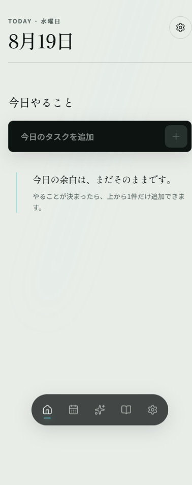
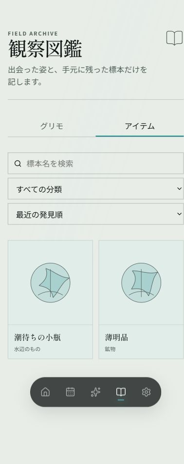
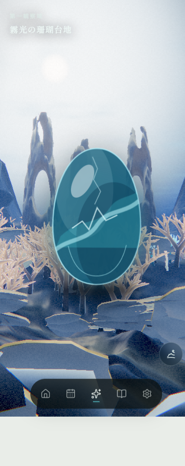

01
30秒で分かる結論
「見た目だけの試作品」ではありません。しかし「すぐ販売・公開できる完成品」でもありません。
What already works
毎日使う核は、端から端までつながった
- 今日のタスクを作り、完了し、完了を取り消せる
- 繰り返し予定を月カレンダーで確認できる
- タスク作成・初回完了に応じて報酬と成長が保存される
- 魔導書の3D世界と発見済み図鑑を見られる
- 起動紋章を「OFF／一定時間／毎回」から選べる
- 端末内保存、書き出し、読み込み、旧版移行がある
- 一度読み込んだPWAはChromiumでオフライン再表示できる
Why it cannot ship yet
長期製品として埋めるべき穴が残る
- 図鑑720枠に対して、品質確定した内容は12件
- 作成済みタスクの編集・削除がない
- 音の設定はあるが、実際の音源・再生エンジンがない
- 将来同期用の送信箱は記録するが、配送役がまだいない
- 10,000件の実時間性能試験と、複数タブ故障試験が未実施
- 物理端末、200%拡大、iOS系オフラインの最終確認が未実施
一番大切な見方：
基盤の品質はかなり進んでいますが、コンテンツ量と製品仕上げはまだ途中です。
したがって「コードが60テスト通った」ことと「利用者に完成品として渡せる」ことは分けて判断します。
02
領域別の成熟度
曖昧な完成率ではなく、同じ4段階の物差しで比較しています。4は「画面がある」ではなく「製品として最終確認まで完了」です。
現在到達した段階
今後必要な段階
基盤・PWA
3 / 自動検証済み
物理端末確認が残る
物理端末確認が残る
データ保護
3 / 自動検証済み
実ブラウザ故障注入が残る
実ブラウザ故障注入が残る
日常の画面
3 / 自動検証済み
編集・削除は別途未実装
編集・削除は別途未実装
魔導書の世界
2 / 基本動作
Area 1のみ、最終素材前
Area 1のみ、最終素材前
観察図鑑
1 / 骨組み
12 / 720定義
12 / 720定義
音・外部連携
1 / 設定・接続口のみ
実エンジンなし
実エンジンなし
リリース検証
2 / PC自動試験
長期・物理端末はこれから
長期・物理端末はこれから
1 / 骨組み契約、画面枠、保存口などがあり、次の実装を安全に載せられる。
2 / 基本動作代表的な操作は動く。内容不足や例外処理の未確認がある。
3 / 自動検証済み通常・異常のテストが再実行でき、主要な退行を自動検知できる。
4 / 製品完成実端末・長期負荷・アクセシビリティを含む最終条件を満たす。
03
機能別の実装表
利用者が触る機能と、その裏側の状態を1行ずつ対応させています。
| 領域 | 現状 | 今できること | 不足・注意点 |
|---|---|---|---|
| ホーム | 自動検証済み | 今日のタスクを1件追加、完了、完了取り消し。保存後にだけ結果を画面へ反映。 | 既存タスクの本文編集と削除は未実装。 |
| カレンダー | 自動検証済み | 月表示、日別一覧、毎日・毎週・毎月・毎年の繰り返し。月末はclamp/skip規則を保持。 | Google Calendarへの実接続は未実装。大量予定の実時間計測は未実施。 |
| 起動紋章 | 自動検証済み | 完全OFF／一定時間／毎回。既定は900ms、最大待機1.2秒。失敗時は再試行表示。 | 最終的な全物理端末での体感確認は未実施。 |
| 設定 | 自動検証済み | テーマ、動き、音、通知、起動設定、保存状態、書き出し・読み込み、旧版移行の入口。 | 音・通知・Calendarの一部はスイッチの先にある実機能が未接続。 |
| 端末内保存 | 自動検証済み | タスク・報酬・成長・履歴を一括保存。再試行しても同じ報酬を二重付与しない。 | 複数タブ同時利用＋強制終了、容量超過の実ブラウザ試験は未完。 |
| バックアップ | 自動検証済み | 版付き書き出し、内容ハッシュ検証、いったん隔離してから有効化する読み込み、旧DB移行。 | 操作中断・巨大ファイル・端末容量不足の実機試験を追加する必要がある。 |
| PWA・オフライン | 一部検証済み | ホーム画面追加用manifest、各アイコン、画面と必要部品のキャッシュ。Chromiumのオフライン再読込は成功。 | Windows WebKitの試験環境で1件保留。実iPhone/iPadで未確認。 |
| 魔導書／世界 | 基本動作 | Area 1「霧光の珊瑚台地」、水の卵、低性能・WebGL障害時の静止画フォールバック契約。 | Area 1以外、最終生物素材、長時間GPU負荷、実際のcontext loss試験が未完。 |
| 観察図鑑 | 骨組み | 発見済みだけ表示、分類・検索・並べ替え、詳細表示。12分類×60枠の厳密な契約。 | 実定義は12件。残り708件をダミーで埋めず、個別制作する必要がある。 |
| 音 | 未実装 | 設定値と将来接続する設計は存在。 | BGM、効果音、ブラウザの再生許可処理、音量制御、音源assetがない。 |
| 将来同期 | 接続口のみ | 変更を送信箱（outbox）へ確実に記録し、後から同期機能を追加できる。 | 送信箱を実際に配送するlease pumpと外部サーバーは未実装。 |
04
現在の実画面
2026-08-19の統合確認時に撮影したモバイル表示です。絵としての完成度ではなく、現時点でブラウザに描画できている範囲の証拠です。

今日のことだけを絞って扱う静かな入口。タスク未登録時の空状態。

検索・分類・並べ替えは動作。ただし表示内容の母数は12件。

Area 1と水の卵をThree.jsで描画。世界の最終アートではなく統合slice。
05
利用時に何が起きるか
利用者の1回の操作から、保存・報酬・画面反映までを一続きにしています。
01 / action
利用者が操作
ホームでタスクを作る、完了する、または完了を取り消します。
02 / one commit
全部を一括で保存
途中まで成功する状態を避けるため、関連データを1つの取引として確定します。
タスク本体操作の受領票報酬成長発見品送信箱・履歴
03 / visible truth
成功後にだけ表示
保存できた事実を受け取ってから、タスク、報酬、図鑑、魔導書の状態を更新します。
なぜ重要か：
先に「報酬獲得！」と表示してから保存に失敗すると、利用者には嘘をつくことになります。
現実装は保存成功を画面の成功演出より先に置いています。同じ操作が通信・端末都合で再試行されても、操作内容の指紋を照合し二重付与を防ぎます。
06
データ保護の仕組み
「ブラウザに保存したから永遠に安全」とは考えず、確認・退避・復旧の経路を最初から分けています。
現在守れていること
- 一部だけ保存される「半端な成功」をtransactionで防ぐ
- 同じ命令と異なる内容をhashで区別する
- 繰り返しタスクは日付ごとの発生単位で記録する
- 不正なバックアップは正本へ入れる前に拒否する
- 旧DBの発見日時を一括で新構造へ移す
まだ実地で壊して試す部分
- 保存中にブラウザを強制終了
- 2つ以上のタブから同時操作
- 端末容量が尽きる瞬間
- 10,000件以上を5年以上使う想定の速度
- Safari/iOS固有の保存・オフライン挙動
07
N+1問題と性能対策
ご質問のN+1問題は、今回の独立レビューで実際に2種類見つけ、構造を変更して回帰テストを追加済みです。
Plain-language explanation
N+1とは「1回見ればよいものを、項目ごとに何度も見に行く」問題
たとえば100個の発見品それぞれについて、毎回10,000件の履歴を最初から探すと、利用年数に比例して急に重くなります。サーバーDBだけの問題ではなく、端末内DBでも同じです。
現在は、発見日時を発見品そのものへ保存し、まとめて一度に読む方式へ変更。日常の画面更新も、全タスクを毎回再計算せず、起動時のcacheに新しい1件だけを足します。
| 見つかった問題 | 修正前 | 現在 | 証明方法 |
|---|---|---|---|
| 図鑑の発見日時 | 発見品ごとに報酬履歴全体を探す。履歴と品数の両方が増えると急増。 | 最初・最後の発見日時をinventoryへ保存。図鑑はinventoryを1回の線形処理で投影。 | DB v1→v2移行テストと図鑑投影テスト。 |
| 日常の再表示 | 設定変更や保存確認でも、全active taskを読み、各タスクを最大100回展開。 | 起動時cache＋新規作成1件だけ差分追加。完了・設定・保存確認で再queryしない。 | 初期化→作成→完了→設定→永続化の間、task query 1回・再構築1回を診断テストで固定。 |
| 残る境界 | 初回起動、日付・表示範囲変更、import・migrationでは正しい全体再構築が必要。ここはN+1ではなく、データ件数に比例する意図的な処理。 | 10,000件の実時間benchmarkは未実施。次の性能ゲート。 | |
現時点の回答：
確認できたN+1／二重ループ経路は対策済みで、同じ問題を再発させない自動テストもあります。
ただし「10,000件でも必ず快適」とまではまだ実測していないため、性能完成とは判定していません。
08
現在通っている検証
最終セッション終了前に同じ検証を再実行し、下記の状態から退行していないことを確認します。
コード規約と危険な書き方の静的検査
画面・保存・契約の型不一致を検査
15ファイル、失敗0
5画面を含む7 route生成
失敗0、環境skip 1
pnpm audit --prod| 検証層 | 何を確かめたか | 現状の限界 |
|---|---|---|
| 単体 | 繰り返し日付、報酬配分、図鑑契約、保存状態、月表示。 | 部品単独の正しさ。実ブラウザ固有の挙動までは含まない。 |
| 統合 | 一括保存、二重実行防止、移行、import staging、N+1診断。 | fake IndexedDB中心。端末故障・容量不足は別途必要。 |
| 画面 | 起動状態機械、図鑑操作、月モデル、runtime startup。 | スクリーンリーダーと200% zoomの完全な実地確認は未完。 |
| 本番E2E | タスク永続化、設定、世界画面、モバイル通常フロー、Chromiumオフライン。 | Windows WebKitのoffline reloadはrunner内部エラーでskip。 |
| セキュリティ | 本番依存パッケージの既知脆弱性0。 | これは侵入試験や完全な安全証明ではない。 |
09
未完成・リスク
重要度は「利用者へ渡す前に止めるもの」から順に並べています。
BLOCK
図鑑コンテンツが12 / 720
720枠を受け止める仕組みはありますが、利用者が実際に集める標本は12件だけです。自動生成の水増しをせず、名前・分類・説明・絵を個別品質で制作する必要があります。
BLOCK
タスクの編集・削除がない
作成・完了・取り消しはできますが、入力ミスを後から直す日常操作が欠けています。長期利用では回避できないため、公開前にdurable commandとして追加が必要です。
HIGH
音と同期配送は接続口のみ
音設定とoutbox記録はありますが、BGM/効果音engine、ユーザー操作後の再生許可処理、outbox lease pumpはありません。設定が「効いているように見えて効かない」状態を解消する必要があります。
HIGH
長期・故障・物理端末の証拠不足
10k taskの実時間、複数タブ＋crash、QuotaExceeded、Pixel 7a/Xiaomi 14T Pro、iOS Safari、200% zoom、長時間GPU負荷が未検証です。設計上の備えと実証は分けて扱います。
MEDIUM
世界・アクセシビリティの仕上げ
Area 1以外、最終生物asset、WebGL context-loss製品E2Eが未完です。報酬dialogのfocus管理、操作領域48px基準、実スクリーンリーダーも仕上げ段階で再監査します。
10
次に進める順序
新機能を無制限に足すのではなく、「日常利用に必要」「壊れない証明」「世界を完成」の依存順で進めます。
日常利用の穴を閉じる
- タスク編集・削除
- 音engineと実asset
- outbox lease pump
- 報酬dialog・48px操作領域
公開阻害
長く使えることを壊して証明
- 10k task benchmark
- multi-tab / crash / quota
- 物理Pixel・Xiaomi・iOS
- 200% zoom・screen reader
信頼の証拠
魔導書の中身を完成へ
- 図鑑708件の個別制作
- 最終生物asset
- Area 2以降と遷移演出
- Google Calendar adapter
価値の拡張
評価方法は継続：
各段階で「実装 → 独立評価 → 目標との差分 → 必要な技術・事例を再調査 → 再実装」を回します。
小さな修正は実装者自身、大きな機能・保存契約・リリース判定はコンテキストを分離した評価者が確認します。
11
非エンジニア向け用語集
この報告で使った言葉を、製品上の意味に置き換えます。
- PWA
- Webサイトの技術で作りつつ、ホーム画面追加やオフライン表示など、アプリに近い使い方ができる仕組み。
- IndexedDB / Dexie
- ブラウザ内の本格的な保存庫と、それを安全に扱いやすくする道具。Grimoire v2では端末内の正本。
- transaction
- 複数の保存を「全部成功」または「全部取り消し」にまとめる取引。報酬だけ付いてタスクが消える、といった半端を防ぐ。
- exactly-once
- 同じ操作を再試行しても、報酬・成長などを1回だけ反映する性質。
- N+1問題
- 一覧1回に加え、各項目ごとに追加の読込を繰り返し、件数が増えるほど急に遅くなる問題。
- cache / 差分更新
- 一度計算した結果を保持し、毎回全部やり直さず、追加・変更された分だけ更新する方式。
- outbox
- 外部同期がなくても、後で送るべき変更を取りこぼさず記録する「送信待ち箱」。現状は箱まで、配送役は未実装。
- E2Eテスト
- 内部部品だけでなく、実ブラウザを操作して「利用者が最後まで使えるか」を確認する試験。
12
根拠と読み方
この報告はリリース済み製品ではなく、2026-08-20時点の作業ツリーを対象にしています。
一次となるリポジトリ内記録
- 製品の約束：docs/vision.md
- 最新状態：docs/state.md
- 長期利用を前提にした設計：docs/architecture.md
- 評価と差分の台帳：docs/quality-loop.md
- タスクと検証証跡：tasks.md
- 次セッション向け引き継ぎ：HANDOFF-JA.md
成熟度はコード行数や主観的な百分率ではなく、「骨組み → 基本動作 → 自動検証 → 製品完成」の共通基準で判定。未検証は未検証のまま明記し、設計上の対応を実機証明と混同していません。